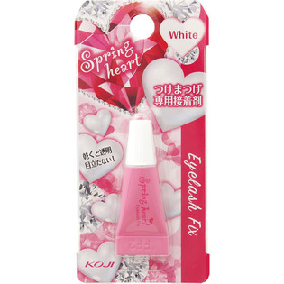

返回列表
产品名称：スプリングハート アイラッシュ フィックススタンダード

コージー本舗 スプリングハート アイラッシュ フィックススタンダード ＿
メーカー コージー本舗
JANコード 4972915013504
商品の特徴
つけたときは白く、乾くと透明になるアイラッシュ（つけまつげ）専用接着剤
アイラッシュの接着を長時間キープ！！
成分・分量
【主成分】
○専用接着剤
天然ゴムラテックス
用法及び用量
キャップを開け、アイラッシュの根元全体にフィックス（接着剤）をつけてください。